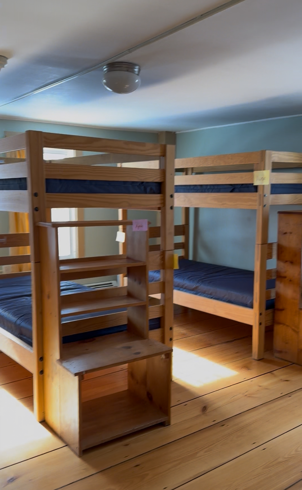
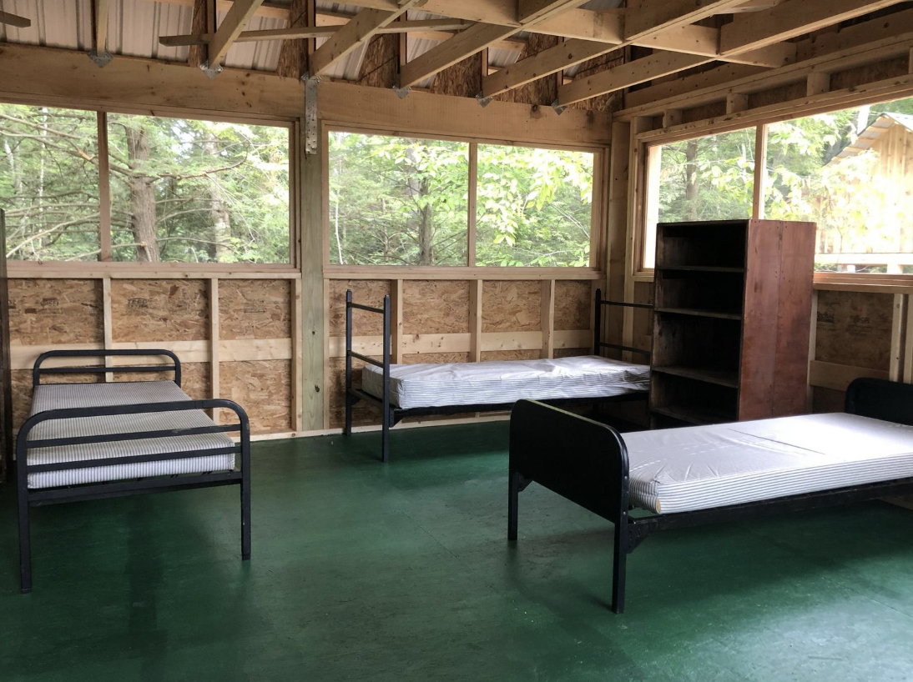

Frequently Asked Questions
Staying at Camp Glen Brook
How much does lodging cost at the camp?
Staying at the camp is free.
When is check in/out?
You may arrive anytime after 12pm on Friday, and we ask that you clean up your space and head out around 12pm on Sunday.
What are the accommodations like at the camp?
There are 3 types of lodging at camp. We'll do our best to put people in rooms with friends / compatible folks, but please reach out if you have any concerns or requests!
Main Building

The Main Building has indoor lodging with rooms that are connected to the kitchen, living room, and library. Rooms have 2-10 twin-size beds, most of them bunked. There are shared bathrooms with showers on each floor. We'll likely put older relatives and family here.
A-Frames

The three A-frame cabins are located right next to the main building. There are ~7 twin-size beds and a shared bathroom in each cabin.
Adventure Camp

Adventure camp is where the older cool-kids stay during summer camp - it's a little more private and primitive, with screened-in windows and no electricity (I think). There's an outdoor outhouse + outdoor shower, and a shared mini rec hall cabin. Rooms have ~10 beds, maybe a third of them bunked. This is Shep's favorite place to stay, and Regina+Shep will be staying here.
Do the cabins have heating or A/C?
The Main building and wing have heating and A/C, but the A-frames and adventure camp cabins do not. The A-frames are insulated, so warmth should not be an issue at this time of year.
What do I need to bring to stay at the camp?
The beds don't have any linens, so you'll need to bring your own (it's just a mattress on the bed, kind of like college!). This is what we recommend for a packing list (in addition to clothing, toiletries, etc.):
Necessary
- sleeping bag, or a fitted sheet + comforter
- pillow
- towel
Recommended
- swimsuit
I'm not very outdoorsy but I do want to stay at camp!
We will try very hard to match people with accomodations we think will suit them best - if you have any concerns, please reach out to us! Please note that the main building rooms will probably be for family/relatives. Shep would like to note that the outdoor cabins are incredibly nice and would be his preferred choice.
Allergies?
There are farm animals on the site (chickens, pigs, sheep, goats). We'll have Benadryl / Claritin handy, but let us know if you have other concerns.